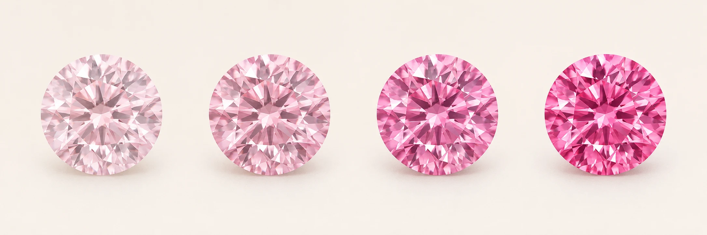

Fancy colour describes the colour you see face-up. Hue is the colour family, such as pink or yellow. Tone describes how light or dark it appears, and saturation describes the strength of the colour. Two diamonds with the same hue can look quite different.
Fancy Light to Fancy
Choose this tier for a softer or more moderate colour. A lighter pink can look delicate in white metal, while yellow gold can make a yellow stone read warmer.
Fancy Intense to Fancy Vivid
Choose this tier for a stronger colour presence. This tier costs more for the same hue and carat weight in our collection. A darker tone alone does not make a diamond more vivid. Fancy Deep and Fancy Dark describe other appearances and are outside our two online tiers.
Compare colours at the same size
Start with a hue, then compare the two tiers at the same carat weight. View the stone in daylight and indoors where possible. The cut, lighting, and setting can influence the colour you see. Our coloured diamonds are lab-grown with VS+ clarity.
See how intensity changes the look

Find your colour
Explore coloured diamond jewellery
Compare seven colours across rings, studs, a bracelet and a pendant.
Customise the Aurelle colour ring